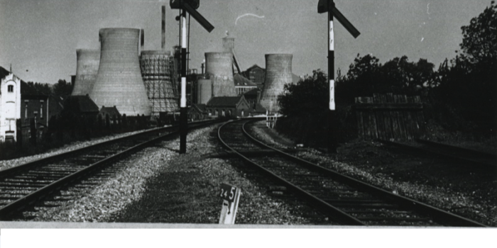
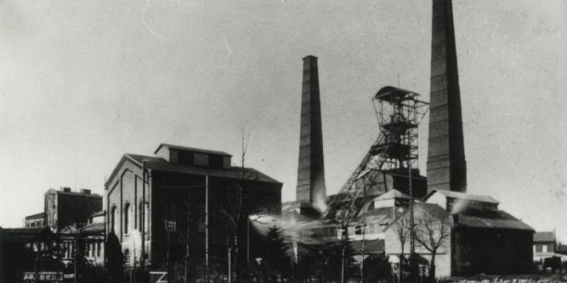

Voordien was alleen de Domaniale-mijn in Kerkrade actief in de kolenwinning in Nederland. De concessie van de mijn ligt aan de westkant van Wormdal, vlakbij de grens met Duitsland. Omstreeks 1850 werd in het noordelijke deel bij het dorp Eygelshoven een proefboring uitgevoerd en werden steenkoollagen ontdekt. Mijnbouw was toen echter niet mogelijk: de technische kennis om diepe putten te boren ontbrak en er waren geen geschikte wateraan- en afvoerwegen in het gebied.
De concessie van Willem en Sofia werd in 1860 en 1861 door de regering van premier Thorbeck verleend aan de Nederlandse Bergwerkvereniging in Den Haag. De Bergwerkvereniging ging in 1881 failliet omdat het er niet in slaagde een schacht te bouwen op de moeilijke en zeer natte grond van de concessie. In 1898 werd de franchise verkocht aan een Belgisch bedrijf genaamd Société Anonymes des Charbonnages Nérlandais Willem et Sophia. Het bedrijf gebruikte de invriesmethode (uitgevonden door Poetsch) om schachten te graven in vochtige grond en bouwde in relatief korte tijd twee schachten in het dorp Spekholzerheide bij Kerkrade. In 1902 begon de mijn genaamd Willem-Sophia met de productie. In 1950 kwam daar Melanie, een Duitse concessie, bij. De mijn produceert steenkool voor huishoudelijk gebruik. Willem-Sophia is een van de kleinere kolenmijnen in Zuid-Limburg. De mijn sloot in 1970.
Of het nu bovengronds of ondergronds is, Julia is een van de modernste mijnen van Europa. Nieuw is bijvoorbeeld het geautomatiseerde circuit voor het lossen van de kettingbaan op de vloer. Voor ondergronds vervoer worden elektrische locomotieven met bovenleiding ingezet. De nieuwe en eerste in Nederland gebruikte verzamelaar is een verzamelaar met een dubbele kegeltrommel. Het lossen naar de kade gebeurt met een triltank, en later ook met een rubberen transportband. In 1926 dook de eerste partij steenkool op. Sommige cijfers tonen de geleidelijke ingebruikname van de mijn. 42.300 ton werd gedolven in 1926, 191.000 ton werd gedolven in 1928 en 701.600 ton werd gedolven in 1930. De totale productie van Laura & Vereeniging bedroeg dat jaar 1.472.400 ton. De beroepsbevolking is toegenomen tot 4.000, waarvan 1.700 in de nieuwe mijn.
Het toegenomen gebruik van stoommachines in de 19e eeuw leidde tot een toename van de vraag naar steenkool. In de jaren 1860 werden nieuwe mijnconcessies aangevraagd en de Nederlandse regering stemde in met twee, namelijk Willem en Sophia. Het blijkt echter dat het ontginnen van deze concessies erg moeilijk is, en het is niemand gelukt om een schacht te ontginnen (zie: Willem-Sophia Mijn). De Domanial-mijn is echter niet verder uitgebreid. De concessie Domaniale werd uiteindelijk uitgebreid met de concessie van de voormalige kleine Neuprick-mijn in Bleijerheide. Neuprick (operationeel sinds 1852) sloot in 1904 als gevolg van ernstige overstromingen. Neuprick behoort tot de Pannesheider Mining Association en heeft een ondergrondse ventilatieverbinding met de Voccart-mijn van Pannesheide. Sinds 1645 wordt er in het Neuprick-gebied steenkool gewonnen.
